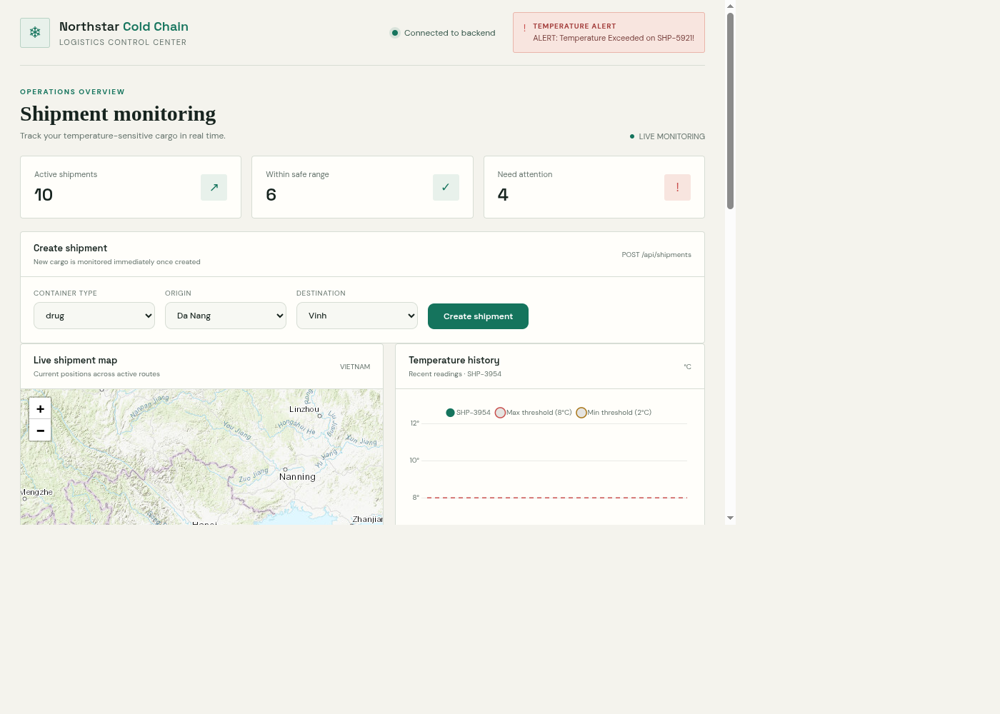
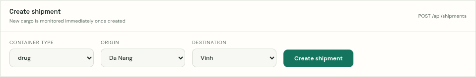
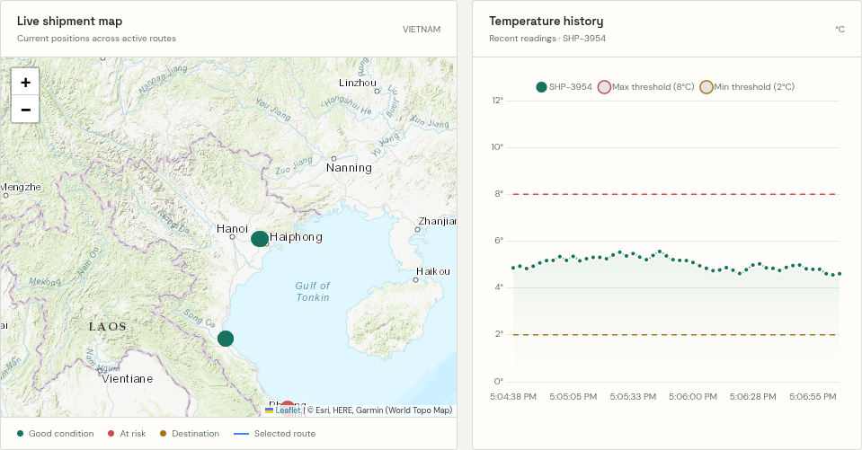
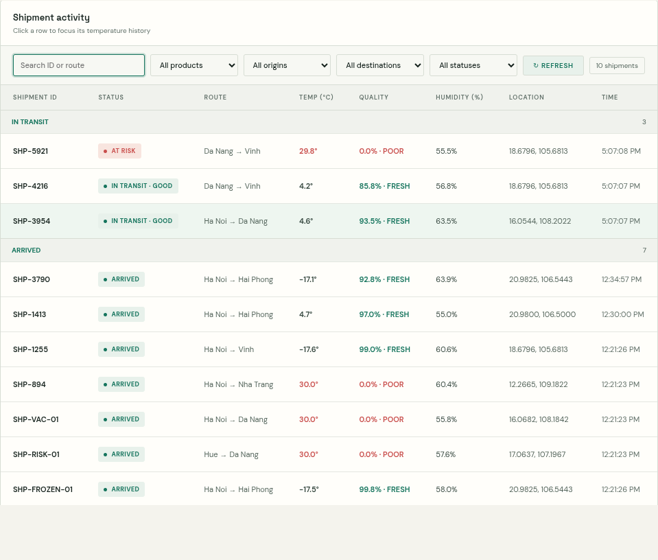

Cold Chain Logistics Dashboard
User Guide: Shipment Monitoring and Quality Assessment

a. Dashboard Overview
Function: The dashboard provides a live summary of shipment activity, temperature alerts, current locations, temperature history, and shipment quality.
Steps:
- Check the connection indicator in the upper-right corner. “Connected to backend” means shipment data and live telemetry are available.
- Review the three summary values: Active shipments, Within safe range, and Need attention.
- When a red temperature alert appears, locate the shipment ID in the activity table and select its row for details.
b. Creating a Shipment

Function: Creates a shipment and adds it to the monitoring dashboard.
Steps:
- Select the container type, origin, and destination.
- Select Create shipment once and wait for the result message below the form.
- After a successful response, locate the new shipment in the Shipment activity table.

c. Monitoring Shipment Location and Temperature
Function: Displays a shipment’s current map position and recent temperature readings against its container limits.
Steps:
- Select a shipment row in the activity table.
- Review the map marker, selected route, and destination marker.
- Read the temperature chart. The solid line is measured temperature; dashed lines indicate the configured minimum and maximum.
- Use the map zoom controls to inspect the route and nearby locations.
d. Reading Shipment Status
Function: Groups shipment records by their current operational status.
IN TRANSIT · GOOD indicates the latest temperature is within the configured range.
AT RISK / COMPROMISED indicates the latest temperature is outside the configured range.
ARRIVED indicates a completed route. Completed shipments remain available for historical review and do not receive further live readings.

e. Searching and Filtering Shipments
Function: Narrows the shipment table by shipment ID, route, product, origin, destination, or status.
Steps:
- Enter a shipment ID or route name in the search field.
- Select a product, origin, destination, or status from the filter fields. Filters can be combined.
- Read the result count beside Refresh. Select All in each field to clear the filters.
- Select Refresh to reload shipment and telemetry data from the backend.
f. Quality Assessment and Completed Shipments
Function: The Quality column estimates product quality from the latest temperature’s deviation from the container’s target midpoint.
Steps:
- Read the percentage and classification in the Quality column:
- FRESH: 80% or higher.
- MODERATE: 50% to below 80%.
- POOR: below 50%.
- Choose Completed in the status filter to review arrived shipments.
- Select a completed shipment to view its Historical readings and route. The dashboard retains up to 50 recent readings per shipment and shows up to 50 newest completed shipments.
Note: The 50-shipment display limit does not delete older records from the database.
g. Refreshing Data and Troubleshooting
Function: Restores shipment data when the dashboard cannot reach the backend or has not loaded the latest records.
Steps:
- Confirm that the dashboard shows “Connected to backend”.
- If connection fails, confirm that the backend and PostgreSQL are running.
- Select Refresh after the connection is restored.
- If map tiles are missing while shipment data is present, check the Internet connection; the map background is provided by an external map service.
Current local dashboard address: http://127.0.0.1:5500/?apiPort=8081&wsPort=8080
The current setup reads shipment records from the updated backend on port 8081 and receives live telemetry from the backend on port 8080.
Summary
The dashboard combines shipment creation, location tracking, temperature history, status filters, and quality assessment. Select a shipment row to connect the table record with its map route and temperature history.